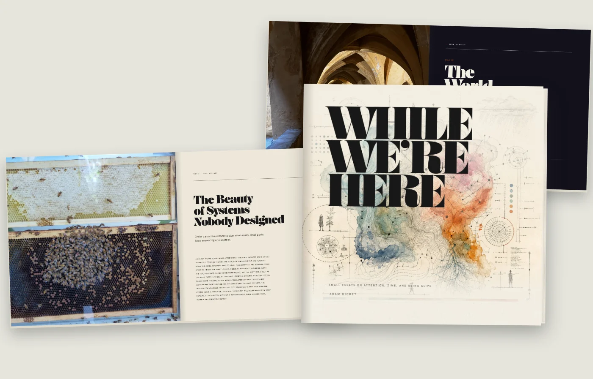

While We’re Here
A square hardcover of small essays on attention, time, and being alive, produced from HTML and CSS to a press-ready PDF.

Beside the product work
A book of essays, and identity and illustration for clients. Not the center of the work: the same judgment, at a different scale, and the same hands.
A square hardcover of small essays on attention, time, and being alive, produced from HTML and CSS to a press-ready PDF.

I take on identity and illustration work too, now and then, mostly when it connects to a product, a publication or an idea I am already helping shape.

Brand identity, badges, and custom illustration for a global innovation network’s internal platform.

The brand foundation behind RBA Consulting’s site: colors, type, and logos with the rules attached, templates and component specs with the numbers underneath.

Complete brand identity, character illustration, and a marketing site for an online mental health platform.

A United Way campaign app that made giving feel like a game: live progress, team leaderboards, and a countdown.